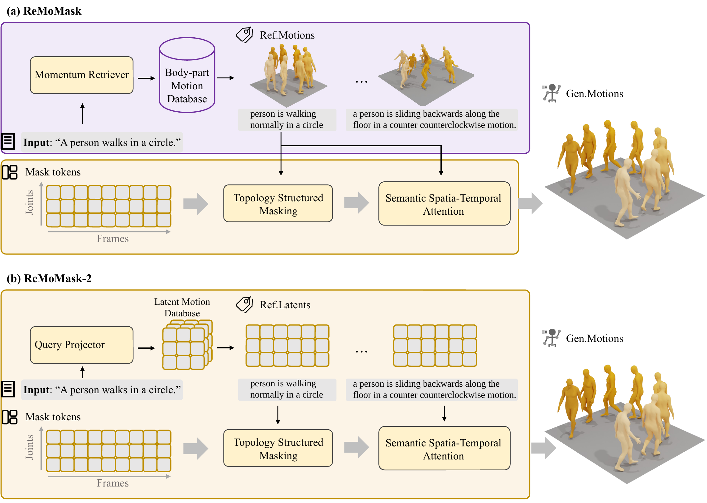
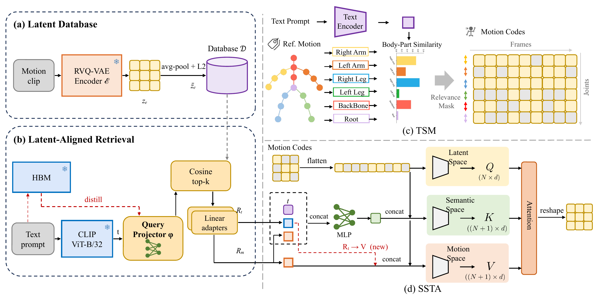
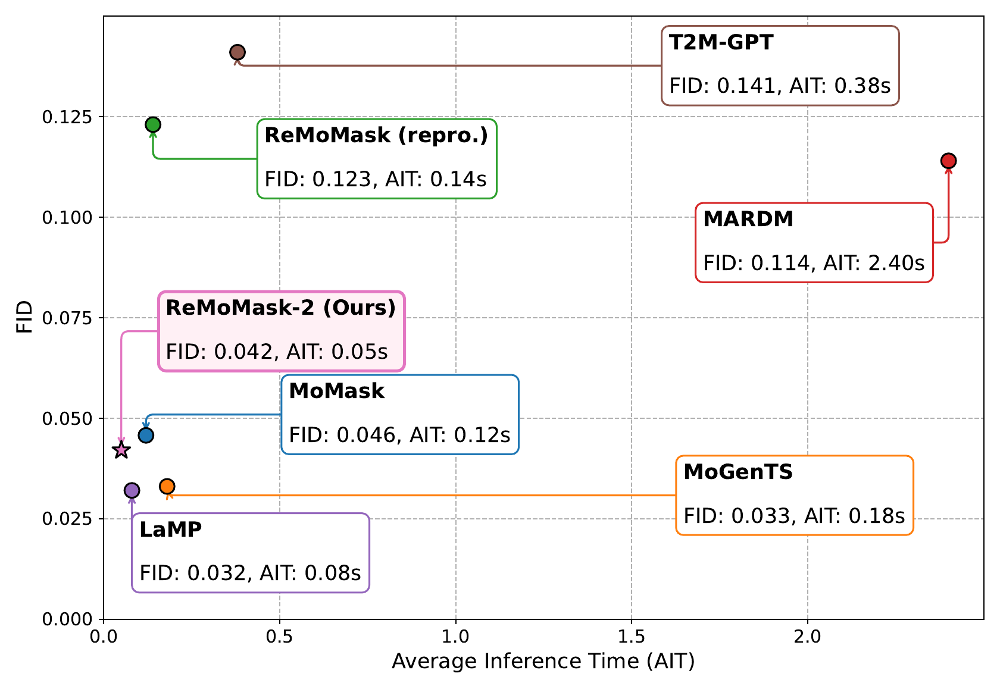
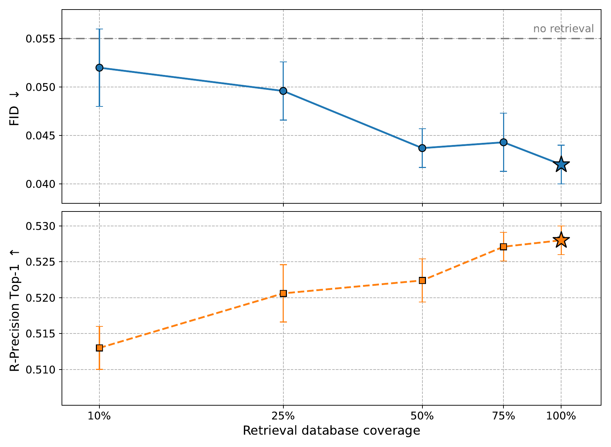
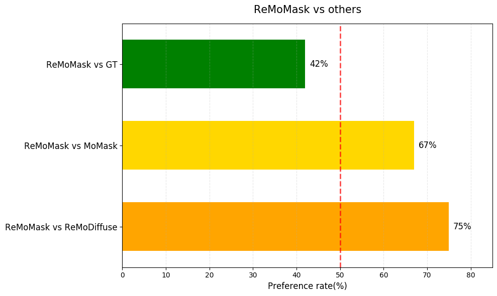
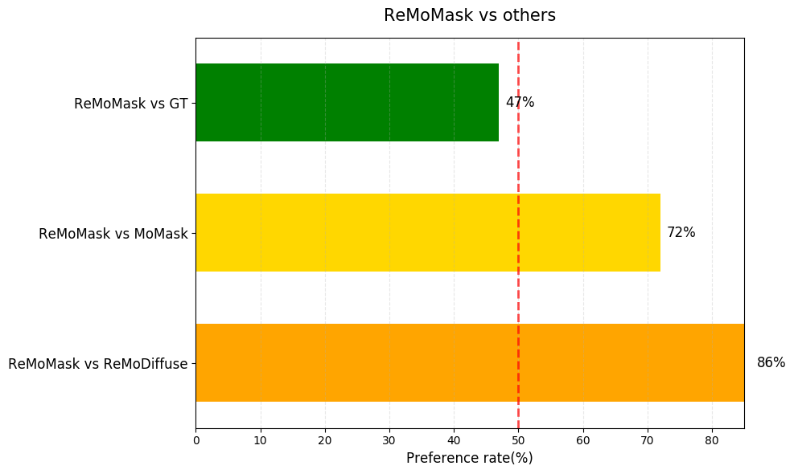

01 /A man walks forwards and then stops.
MoGenTS
ReMoDiffuse
TMR
ReMoMask
ReMoMask-2
Latent retrieval-augmented generation
1USYD 2School of Computer Science, Peking University 3UCAS
*Equal contribution. †Project lead. ‡Corresponding author.
01 /A man walks forwards and then stops.
02 /A person is balancing on something.
03 /A man walks forward in a clumsy way.
04 /A person walks forward rather slowly.
A person walks backward in a straight line.
A person takes several sideways steps while keeping their body facing forward.
A person performs jumping jacks, opening and closing both arms and legs.
A person jumps upward from both feet and lands in the same spot.
A person waves their right hand above shoulder height while standing still.
A person bends forward at the waist with their arms hanging down.
A person gestures with both hands while explaining something.
A person points forward with their right arm.
A person makes a small jump forward from both feet.
A person takes slow sideways steps to the right.
A person reaches upward with the right arm.
A person jogs at an easy pace.
A person runs forward quickly, pumping both arms.
A person bends forward and reaches both hands toward their toes.
A person warms up by swinging both arms and bending their upper body forward.
A person gives a short bow.






Database coverage protocol. Subsets of the latent-aligned database are drawn uniformly at random with a shared seed across points and are swapped in at inference time only: the generator, the query projector, and the training recipe are those of the deployed model throughout, so these points share the intervention protocol of the ablation ladder. The dashed line marks the no-retrieval setting; 100% is the deployed configuration.